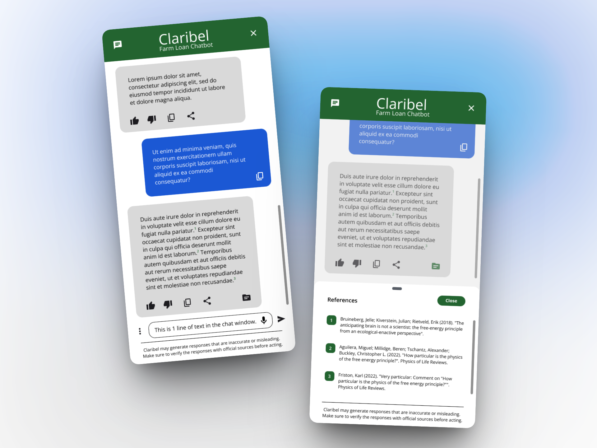
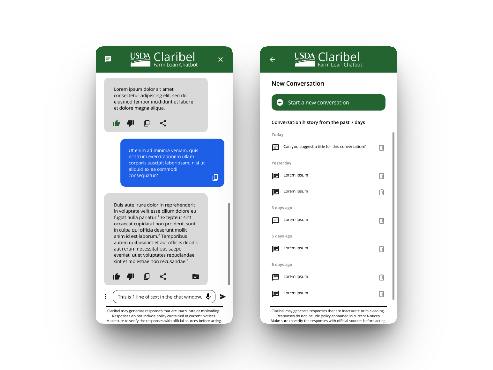
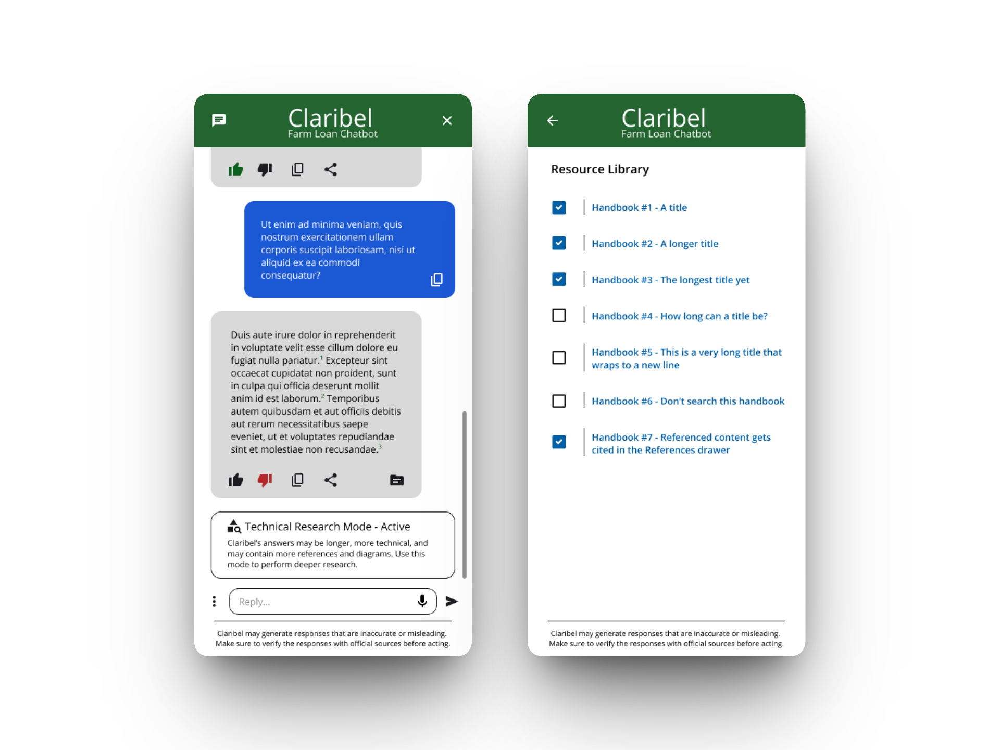
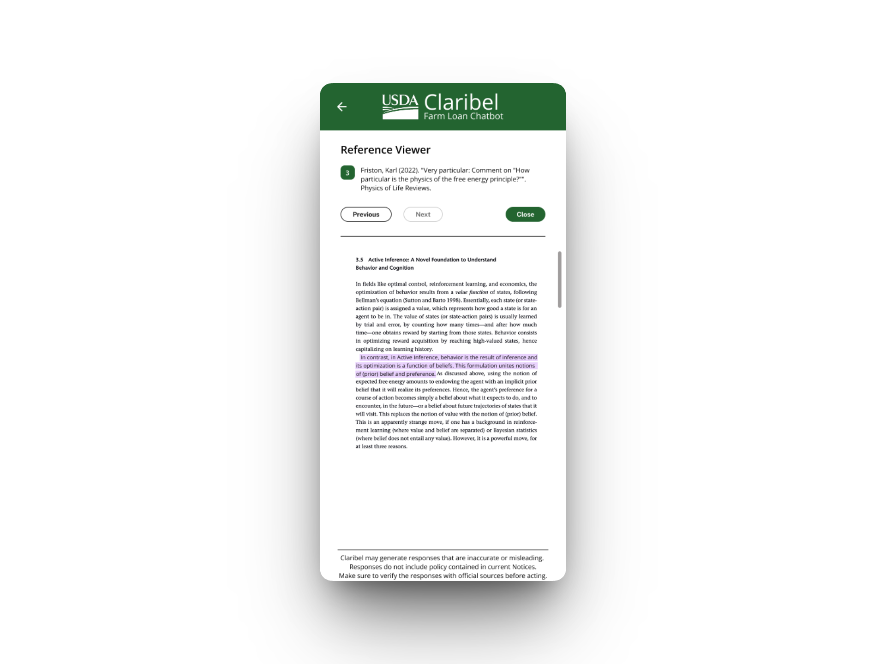
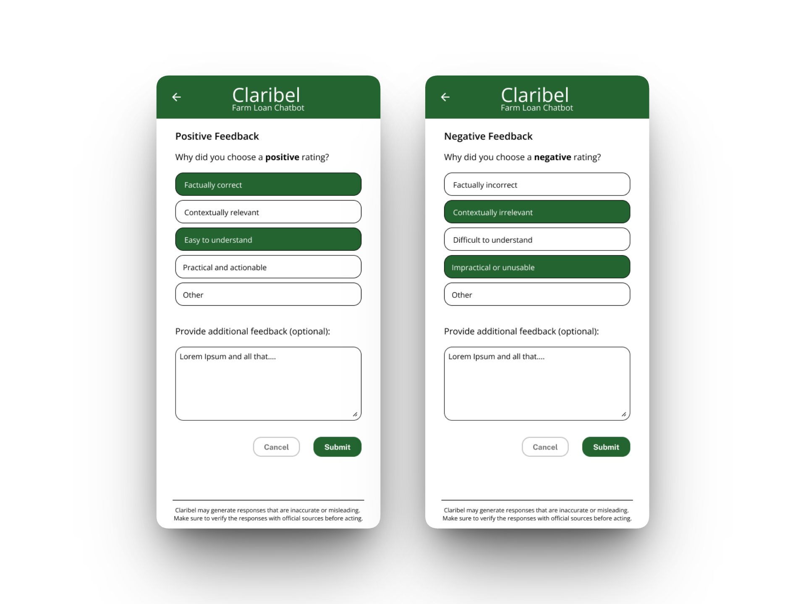
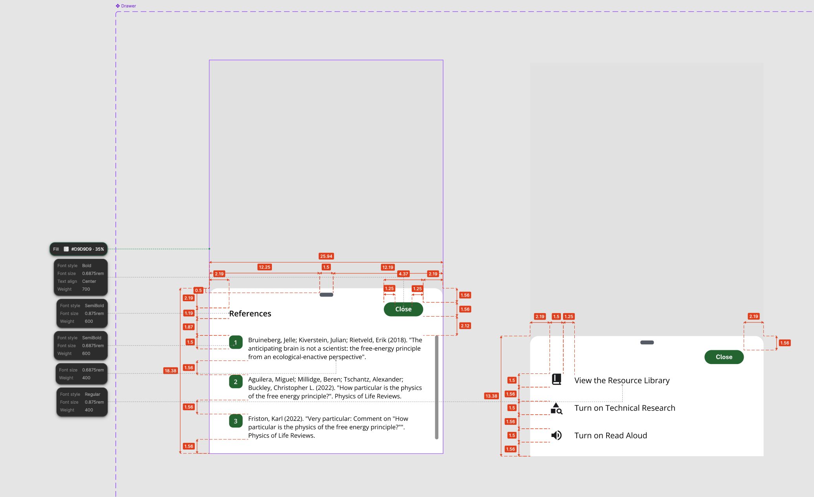

Claribel — USDA GenAI Chatbot
USDA Farm Loan Programs — Conversational AI Interface Design

The Problem
USDA Farm Loan Programs staff navigate 2,000–3,000 pages of policy handbooks to answer questions from farmers applying for loans. New customer service representatives relied on Ctrl+F or asking a more experienced colleague. Seasoned loan officials needed deeper cross-referencing across multiple policy areas. Leadership wanted to deploy a GenAI chatbot that could surface policy answers with citations to source material — but the team had no UI design and no UX perspective on how to make AI-generated responses trustworthy and actionable in a government context.
The Approach
I started by interviewing the product owner to identify the three core user types: customer service reps looking for quick answers while on the phone with a farmer, subject matter expert loan officials doing deep policy research across multiple handbooks, and executives who needed a mobile-optimized view to look up information while in meetings. Each persona had fundamentally different needs — the CSR needs a short, actionable answer fast; the SME needs comprehensive source material and cross-references; the executive needs the same information delivered cleanly on a phone screen.

The stakeholder's three priorities were clear: access to ground truth source documents was non-negotiable, the system needed to help users construct accurate prompts, and there had to be a structured feedback mechanism so the team could improve the AI's responses over time.
I designed a personality system that adapted the chatbot's behavior to the user's context. A "Customer Service Coach" mode delivers short answers with suggestions for phone or email follow-up. A "Technical Research Assistant" mode provides longer, more detailed responses with additional references and diagrams. Users could also filter which policy documents the AI draws from — critical because the AI model was getting confused between loan making and loan servicing questions when the full corpus was included.

For the citation experience, I designed a reference system where numbered citations in the response link to a split-screen document viewer showing the highlighted source passage alongside the AI's answer. This was the product owner's highest priority — staff needed to verify AI responses against the actual handbook language and cite those sources in official correspondence like adverse decision letters.

I also designed the feedback mechanism with structured categories (factually correct/incorrect, contextually relevant/irrelevant, easy/difficult to understand, practical/impractical) plus an optional free-text field, giving the development team actionable data to improve the model.

Since the development team didn't have Figma access, I delivered fully dimensioned specs — redlined screenshots with spacing, font sizes, weights, and corner radii annotated — so engineers could implement without ambiguity.

Reflection
Designing for AI-generated content requires different trust patterns than traditional interfaces. In a government context, the AI's answer isn't the product — the verifiable source citation is. Everything in the UI had to reinforce that the chatbot is a tool for finding information faster, not a replacement for policy expertise. The personality and filtering systems were my solution to a prompt engineering problem that was showing up as a UX problem — the AI was giving confused answers not because the model was bad, but because users had no way to scope their questions.